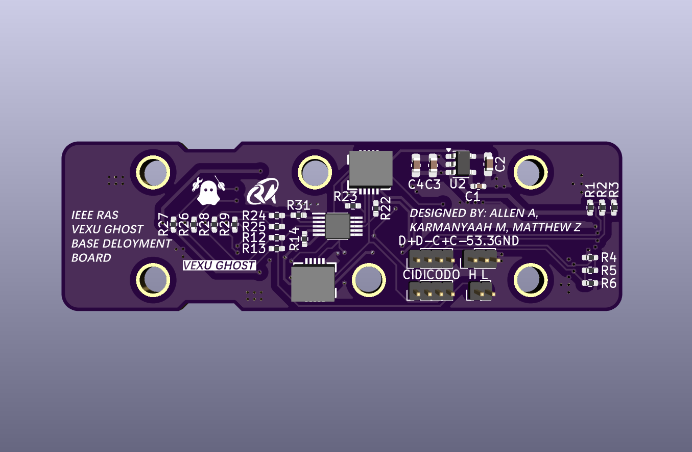
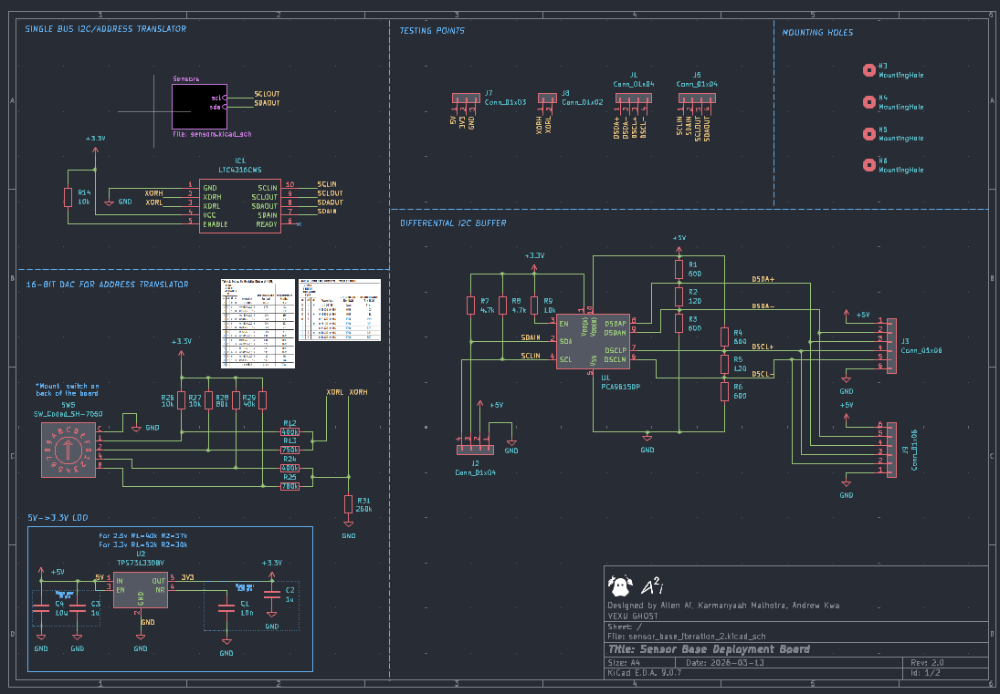
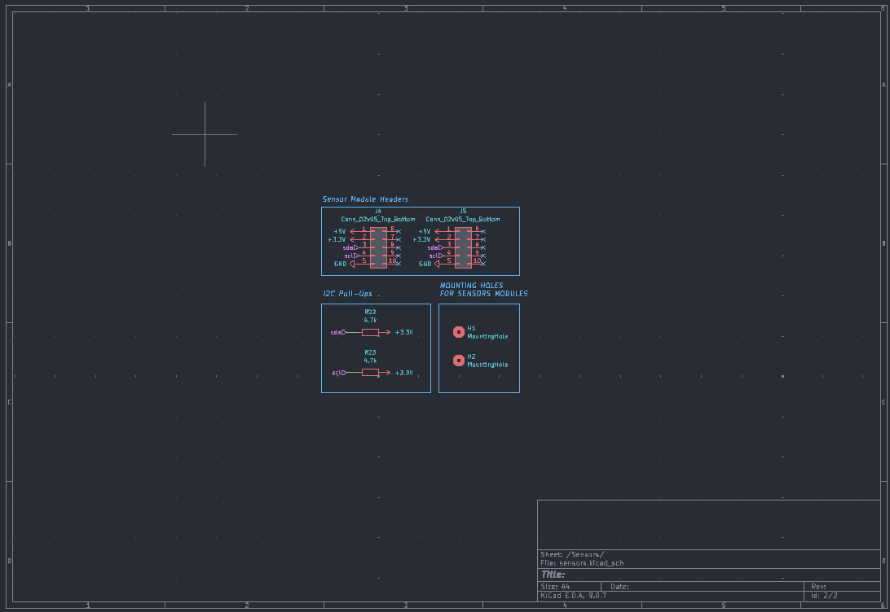
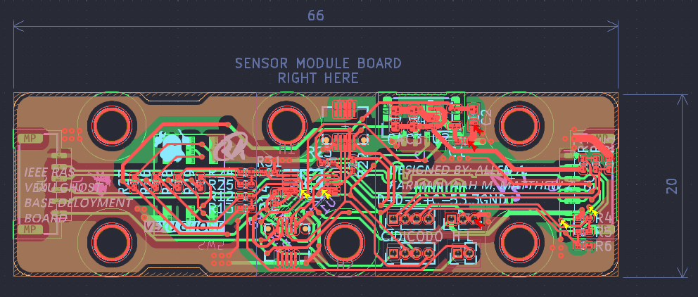
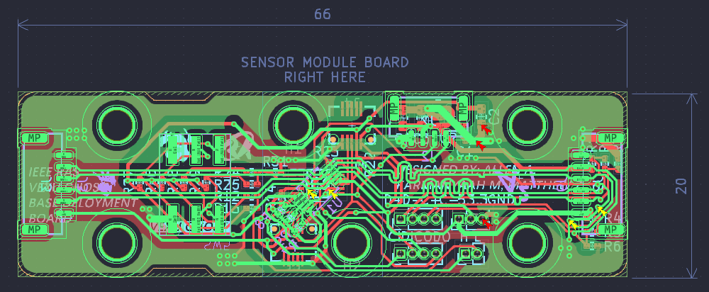
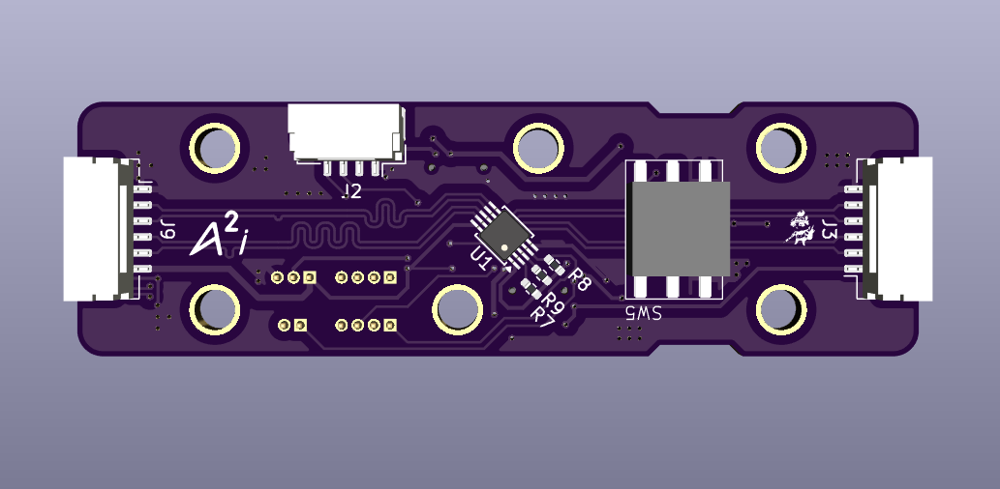
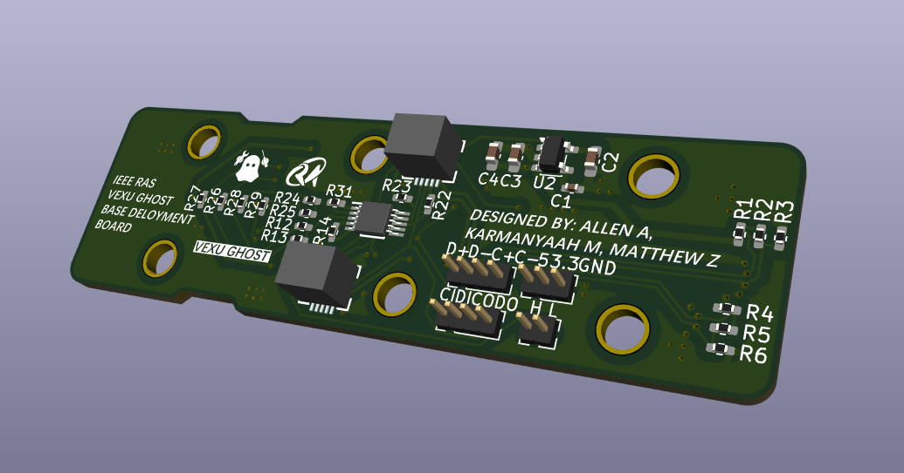

This is a version two of the base sensor deployment board for VEXU GHOST designed in KiCad to deploy different sensor modules, such as color sensor, distance sensor, and IMU, as well as I2C GPIO expander modules for limit switching. This iteration continues to use the custom hardware architecture with daisy-chaining differential I2C and address translation for multiple identical modules, and further optimizes on the board size, signal integrity, thermal distribution, mechanical stability in mounting, and production costs.
The design continues to utilize a PCA9615DP differential I2C bus buffer, LTC4316 I2C address translator, and a 16-bit DAC with a rotary switch for the address translation. The differential I2C pair now follows proper differential pair topology, has matching lengths of ~93.05 mm within its own pair and between the SDA and SCL pairs, and has stitching vias to improve current return path. The inter-board connectors are now 6-pin JST GH SM06B GHR connectors to reduce the board height while maintaining mechanical stability in its connection, given the course of motion that can occur during a match. The connectors that mounts the modules are now upgraded to a low-profile mezzanine board-to-board connector with a 5-mm mated height to further reduce the overall height of the board when the modules are connected. The board size is reduced by 26.8% compared to V1, with more space-efficiency in length and height to fit the robot's mounting constraints.
I also have went through extensive research and cross-team discussions on finding a better connector to use for the inter-board connection in place of the RJ12 connectors that were originally chosen, including a power stability simulation on a full sensor system with five daisy-chained sensor boards in LTspice in typical and worst-case test conditions. In compromising in wire crimping and harnessing, mechanical stability in the connection, signal integrity, and cost, we decided to switch to the afforementioned JST GH SM06B GHR connectors.





